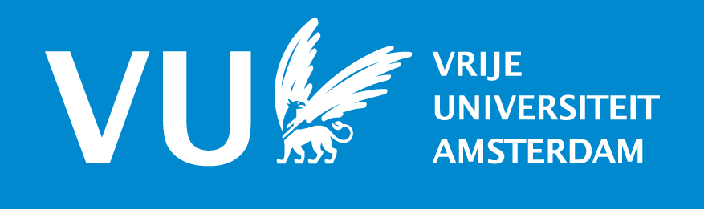

Werk

Student Assistent
Voor het vak Data Structures and Algorithms. Omvat het behandelen van opdrachten in werkcolleges en het helpen van studenten met vragen.
Dr. Femke van Raamsdonk
VU Amsterdam
Sept. 2020 - Okt. 2020
Student Assistent
Voor het vak Data Structures and Algorithms. Omvat het behandelen van opdrachten in werkcolleges en het helpen van studenten met vragen.
Dr. Femke van Raamsdonk
VU Amsterdam
Sept. 2019 - Okt. 2019